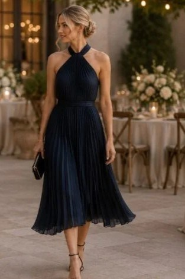
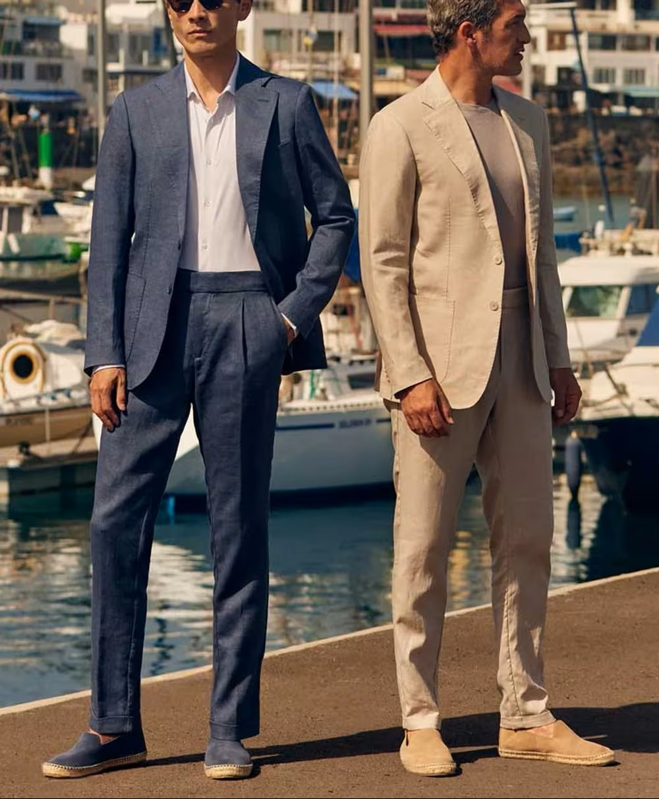

Kleuren die we mooi vinden
- Poederblauw en zacht hemelsblauw
- Saliegroen en olijfgroen
- Blush en vergrijsd roze
- Lavendel en zacht lila
- Gedempt geel en warm terracotta
What to Wear
Voor onze bruiloft kiezen we cocktail attire: een feestelijke en verzorgde dresscode die ruimte laat voor je eigen stijl.
Zie het als een stijlvolle middenweg: eleganter dan casual, maar niet formeel als black tie.
Kies vooral iets waarin je jezelf voelt, makkelijk kunt bewegen en de hele dag en avond kunt meevieren.
Deze suggesties gelden voor iedereen, welke outfit je ook kiest.
Bekijk dresscode voor
Kies voor een feestelijke en elegante outfit. Een cocktailjurk is natuurlijk een uitstekende keuze, maar een stijlvolle jumpsuit of een chic broekpak past net zo goed binnen de dresscode.
Je mag best wat kleur, glans of opvallende accessoires dragen. Het draait om een verzorgde uitstraling die past bij een feestelijke bruiloft.

Een goed passend pak is altijd een veilige keuze. Heb je geen volledig pak, dan kan een nette combinatie van pantalon, overhemd en colbert ook uitstekend werken.
Kleur mag zeker. Een mooi blauw, groen, zandkleurig of ander stijlvol pak past perfect bij deze dresscode.
